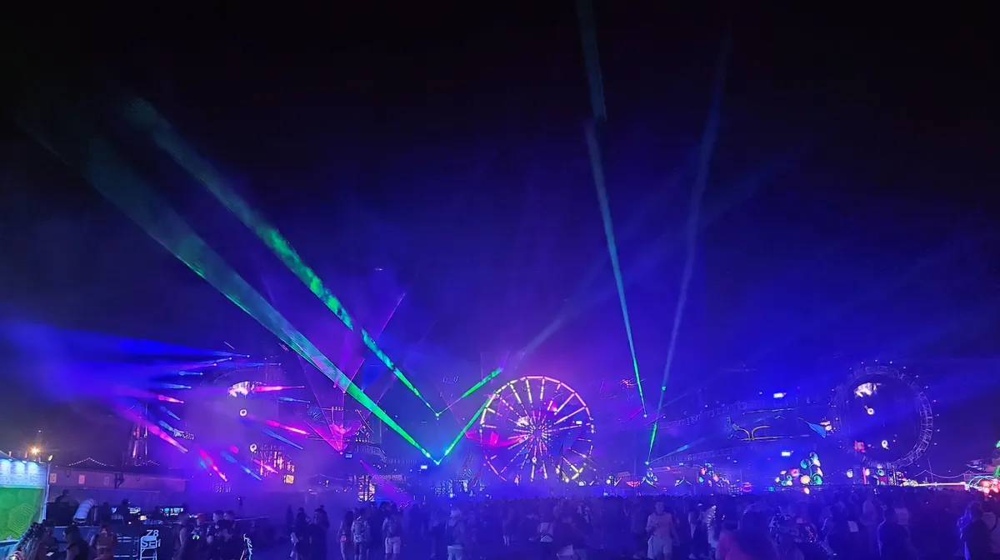
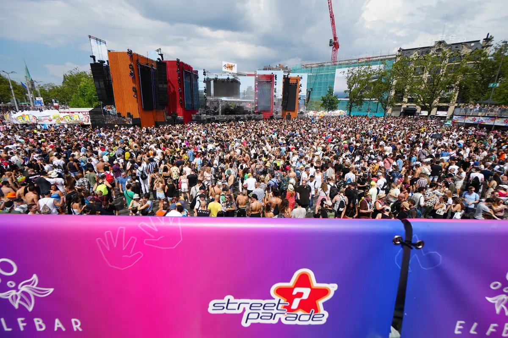

Festival guide, 2027
The world's biggest EDM festivals in 2027
Electronic music festivals ranked by the attendance each one reported, with the year, what the number counts and the 2027 dates, from Las Vegas and Cluj-Napoca to Boom and Zurich.
A ranking by reported crowd.
People ask for the world's biggest EDM festival, but festivals count crowds in different ways. Some add up admissions across every day, some give the number of people on site, and some only say how many fans they expect. The detail on getting there and staying over lives in each festival's own guide on this site.
How this list was chosen.
A festival is on this list when these three things are true:
- Electronic music is the core of the programme.
- It is a ticketed festival that has published an attendance figure, from the organiser or from press reporting the organiser.
- It ran in 2025 or 2026 and has not said it is stopping.
The figures are not all measured the same way. Where a festival counts every day's visitors, one person at a three day event can be counted three times. Each entry says what its number means. Two figures, for Awakenings and Creamfields, were given before the 2026 festival opened, and Ultra Europe's is from 2023, the last year its organisers published one. Dates come from each festival's own site. Where 2027 is not yet published, the table gives the 2026 date as a guide.
World's biggest EDM festival dates for 2027 at a glance.
Three of the nine fall in the second week of July 2027: Airbeat One, Ultra Europe and Awakenings.
| Festival | Where | Reported attendance | 2027 dates |
|---|---|---|---|
| EDC Las Vegas | Las Vegas, US | Over 500,000 (2026); over 525,000 (2024) | 14 to 16 and 21 to 23 May |
| Untold | Cluj-Napoca, Romania | Over 500,000 over four days (2026) | 5 to 8 August |
| Tomorrowland | Boom, Belgium | 400,000 over two weekends (2026) | Not announced (17 to 19 and 24 to 26 July in 2026) |
| Parookaville | Weeze, Germany | 225,000 over three show days and five camping days (2026) | 16 to 18 July |
| Airbeat One | Neustadt-Glewe, Germany | 210,000 over five days (2026) | 7 to 11 July |
| Ultra | Miami, US | 165,000, sold out (2026) | 26 to 28 March |
| Ultra Europe | Split, Croatia | Over 150,000 (2023) | 9 to 11 July |
| Awakenings | Hilvarenbeek, Netherlands | 119,000, announced at sell-out (2026) | 9 to 11 July |
| Creamfields | Daresbury, England | Over 80,000 expected over four days (2026) | 26 to 29 August |
| Street Parade (free) | Zurich, Switzerland | About 900,000 in one day (2026) | 14 August |
Which is the biggest EDM festival in the world?
Three festivals reported more than 400,000 people in 2026, and each counted its crowd over a different stretch: three days for EDC, four for Untold, two weekends for Tomorrowland.
EDC Las Vegas
EDC Las Vegas is held at Las Vegas Motor Speedway. The 2026 edition, on 15 to 17 May, drew more than 500,000 people over three days, and the 2024 edition drew over 525,000. That 2024 figure is the highest any ticketed festival on this list has published, so on the numbers it is the largest EDM festival in the world. For 2027 Insomniac is splitting it into two weekends: EDC Dusk on 14 to 16 May and EDC Dawn on 21 to 23 May, inside a 12 day run from 13 to 24 May that Insomniac calls Dusk Till Dawn. It says the 2027 festival is being designed with a lower capacity. See the EDC Las Vegas guide.

Untold, Cluj-Napoca
Untold takes place in Cluj-Napoca, Romania, with its main stage in Cluj Arena. Pollstar reported more than 500,000 visitors across four days in August 2026, on nine stages. Most of the bill is electronic, with Afrojack, Carl Cox, Kygo and Martin Garrix in 2026, alongside pop names such as Sting and Lewis Capaldi. The 2027 edition is on 5 to 8 August. See the Untold guide.
This is David Guetta's set at Untold in 2023, published by DJ Mag.
Tomorrowland, Belgium
Tomorrowland is held in Boom, Belgium, over two weekends. The 2026 edition drew 400,000 festivalgoers from more than 200 countries, on 17 to 19 and 24 to 26 July. Its livestreams were watched 233 million times. The 2027 dates have not been announced. See the Tomorrowland guide.
Which are the rest of the world's biggest electronic music festivals?
The next six are in Germany, the US, Croatia, the Netherlands and the UK.
Parookaville, Germany
Parookaville is held at Weeze Airport in the Lower Rhine region of Germany. WDR reported 225,000 visitors in 2026, counted across three show days and five camping days with pre-parties. The 2027 edition is on 16 to 18 July. See the Parookaville guide.
Airbeat One, Germany
Airbeat One is held in Neustadt-Glewe, in northern Germany. The organiser reported a record 210,000 guests over five days in 2026. The 2027 edition marks its 25th anniversary, on 7 to 11 July. See the Airbeat One guide.
Ultra Miami
Ultra is held in Bayfront Park, Miami, in March. The 2026 edition sold out with 165,000 people from 100 countries. The 2027 edition is on 26 to 28 March. See the Ultra guide.
Ultra Europe, Croatia
Ultra Europe is held in Split, Croatia. Its organisers reported more than 150,000 attendees from over 140 countries at the ninth edition in 2023, the last final figure they published. The 2027 edition is on 9 to 11 July.
Awakenings, Netherlands
Awakenings is the techno festival on this list, held in Hilvarenbeek in the south of the Netherlands. The 2026 edition sold out with a record 119,000 visitors announced before it opened. The 2027 edition is on 9 to 11 July. See the Awakenings guide.
Creamfields, England
Creamfields is held at Daresbury, Cheshire, over the August bank holiday. More than 80,000 fans were expected over four days in 2026. The 2027 edition, its 30th year, is on 26 to 29 August. See the Creamfields guide.
What is the largest electronic music festival in the world?
If free events count, the largest electronic music festival in the world is the Street Parade in Zurich. It is a one day parade through the city, with no ticket. The organiser puts the crowd at 900,000 in 2026, 800,000 in 2025 and 920,000 in 2024, estimates of the people in the streets rather than a ticket count. That is why it is kept out of the ranking above. The 2027 Street Parade is on Saturday 14 August, from 13:00 to midnight. For the Berlin parade that came before it, see the Love Parade.

Not on this list, and why.
These come up in the same searches and fall outside the tests above.
- Glastonbury, Coachella, Lollapalooza and Sziget. These are general music festivals, with rock, pop and rap at the top of the bill, so they are not ranked here. See this site's guides to Glastonbury, Coachella, Lollapalooza and Sziget.
- Mysteryland. The Dutch festival says it welcomes more than 125,000 visitors each year, but it gives no figure for a single edition, and it did not run in 2026. See the Mysteryland guide.
How to choose.
Size changes how the day feels. At EDC, Untold and Tomorrowland the main stage crowd is the event, and the walk between stages takes time. At the smaller festivals here, such as Awakenings or Creamfields, it is easier to move around and catch more sets. For dates by region, see the best EDM festivals in the USA, the best electronic music festivals in Europe and the best electronic music festivals in Germany. For the summer season alone, see the best summer electronic music festivals.
Check dates with the festival before you book travel, because Tomorrowland has not yet published 2027.
Biggest EDM festivals FAQ.
What is the biggest EDM festival in the world?
On published figures, EDC Las Vegas. Its 525,000 in 2024 is the highest any ticketed festival here has reported, with Untold close behind at more than 500,000 in 2026, which makes EDC the biggest electronic music festival in the world for now. Insomniac plans a lower capacity for 2027.
Is Tomorrowland the world's biggest festival?
No. Tomorrowland reported 400,000 festivalgoers in 2026, fewer than EDC Las Vegas and Untold. Its livestreams set a record of their own in 2026, with 233 million views.
What is the largest music festival in the world?
For electronic music, the largest ticketed festivals are EDC Las Vegas and Untold, each above 500,000 in 2026. The free Street Parade in Zurich drew about 900,000 people in 2026. Rock and pop festivals are left out of the ranking.
When is EDC Las Vegas 2027?
EDC Dusk is on 14 to 16 May 2027 and EDC Dawn on 21 to 23 May, both at Las Vegas Motor Speedway.
Sources.
- EDC Las Vegas: Insomniac on the 2027 dates, My Modern Met on 2026, Digital Music News on the 2024 record.
- Untold: Pollstar on 2026, the festival site.
- Tomorrowland: Bandwagon on 2026, the festival site.
- Parookaville: WDR on 2026, the festival site.
- Airbeat One: Berliner Zeitung on 2026, the festival site.
- Ultra: Electric Feels on 2026, the festival site.
- Ultra Europe: the organiser on 2023 and the 2027 dates.
- Awakenings: Mixmag Germany on 2026, the festival site.
- Creamfields: the festival on 2026, Time Out, the 2027 dates.
- Street Parade: the organiser's history, the 2027 date.
- Mysteryland: the festival site.
Continue reading
Read next.
Want something to play while you read? Let the Selector pick a DJ set.